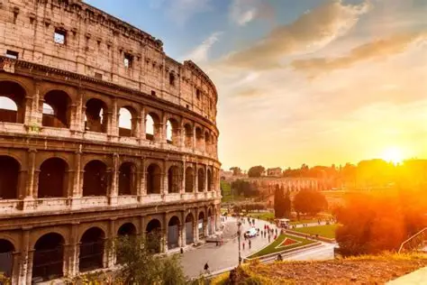

Coliseu

Monumento emblemático de Paris, conhecido por sua estrutura de ferro e por ser um dos pontos turísticos mais visitados do mundo.
Cristo redentor

Estátua icônica que representa Jesus Cristo, localizada no topo do Corcovado, com uma vista panorâmica do Rio de Janeiro.
Muralha da China
Impressionante estrutura construída para proteger o território chinês, estendendo-se por milhares de quilômetros.
Machu picchu
Antiga cidade inca situada nas montanhas, famosa por suas ruínas bem preservadas e paisagens deslumbrantes.
Torre eiffel
Monumento emblemático de Paris, conhecido por sua estrutura de ferro e por ser um dos pontos turísticos mais visitados do mundo.
Esses são alguns dos destinos que oferecemos!